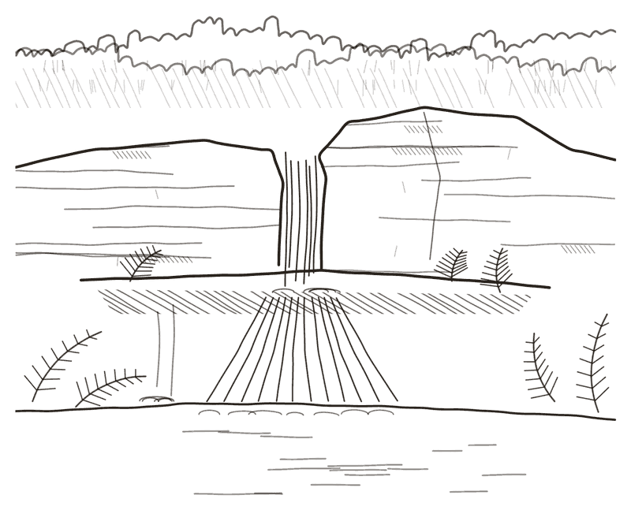

Fern Falls
2 minutes · unmarked trail · good with kids
A 42-foot waterfall just off Highway 7. Park at a safe pull-off near the Scenic 7 Byway sign and follow the old road. It usually has water even in dry spells.
Keep little ones back from the drop, and turn around if the footing gets slick.